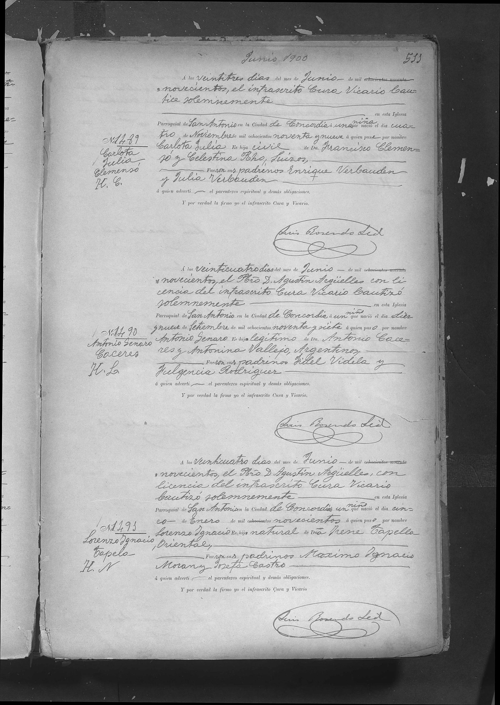
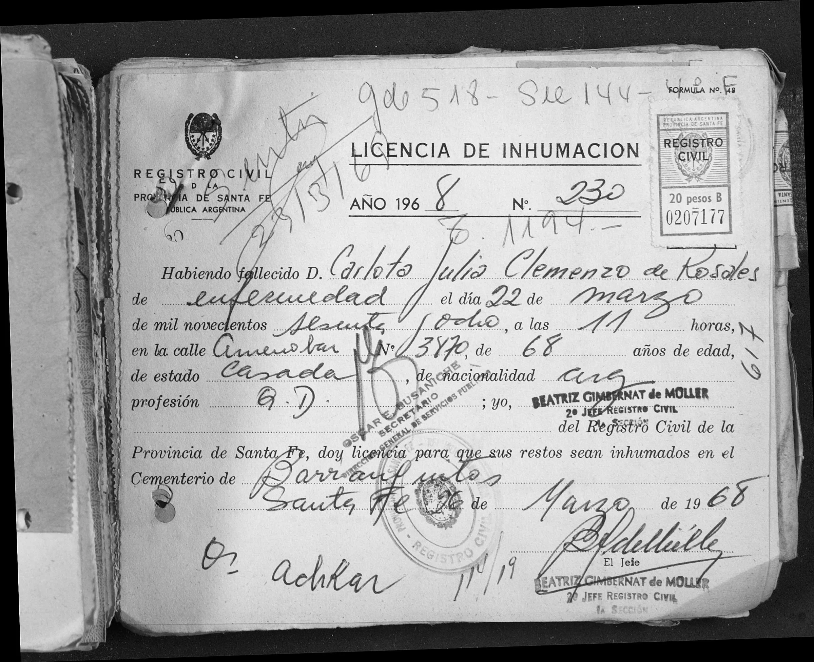

La historia
Carlota Julia nació el 4 de noviembre de 1899 en la zona de Concordia, Entre Ríos — la familia seguía en la etapa Yeruá/Concordia documentada por el nacimiento de su hermana Maria Luisa Clemenzo dos años antes. Fue bautizada casi ocho meses después, el 23 de junio de 1900, en la Iglesia Parroquial de San Antonio, Ciudad de Concordia (acta N.º 1489, cura vicario Luis Rosendo Sed — lectura del apellido insegura), con el apellido en una variante nueva para la colección: «Clemensó». Sus padrinos fueron Enrique y Julia Verbauden.
Carlota casó con Antonio Fonteine —fecha sin documentar; su hija Angélica Elvira (Angélica Elvira Fonteine) nació en 1918— y en algún momento posterior volvió a casarse: su licencia de inhumación la nombra «Carlota Julia Clemenzo de Rosales», de estado casada, no viuda.
Murió el 22 de marzo de 1968, a los 68 años —exactos para una nacida en noviembre de 1899—, de enfermedad, en la calle Amenábar 3470 de la ciudad de Santa Fe, adonde había ido a parar como sus hermanas Maria Luisa Clemenzo y Maria Celestina Roh. Fue sepultada el 26 de marzo en el cementerio de Barranquitas — el mismo donde en 1951 había sido sepultada su prima Maria Luisa Clemenzo Roh, cuya licencia permite leer el nombre con claridad.
Cronología
| Año | Fuente | Qué dice |
|---|---|---|
| 1899-11-04 | Acta de bautismo N.º 1489, parroquia San Antonio (Concordia) | Nace «una niña […] el día cuatro de Noviembre de mil ochocientos noventa y nueve» |
| 1900-06-23 | Acta de bautismo N.º 1489 | Bautizada «Carlota Julia», «hija civil de Dn. Francisco Clemensó y Celestina Rho, suizos»; padrinos Enrique y Julia Verbauden; margen «H. C.» |
| ~1917 | Deducción (Angélica Elvira Fonteine nace 1918) | Casa con Antonio Fonteine — acta aún no hallada |
| 1918 | árbol | Nace su hija Angélica Elvira Fonteine (Angélica Elvira Fonteine) |
| 1918–1968 | Licencia de inhumación («de Rosales», casada) | En algún momento enviuda o se separa de Fonteine y casa en segundas nupcias con un Rosales |
| 1968-03-22 | Licencia de inhumación N.º 230, Registro Civil de Santa Fe | Muere «Carlota Julia Clemenzo de Rosales», 68 años, casada, argentina, de enfermedad, en Amenábar 3470, Santa Fe; sepultada el 26-3 en el cementerio de Barranquitas (nombre confirmado por la licencia de Maria Luisa Clemenzo Roh, 1951) |
Qué falta / hipótesis
Líneas de investigación
- PRIORIDAD: buscar el acta de matrimonio civil de François Clemenzo × María Celestina Roh en el Registro Civil de Concordia / Colonia Yeruá, ventana 1897–1900 (cerrada por el «soltero» de 1897 y la «hija civil» de 1900)
- Buscar el acta de matrimonio con Antonio Fonteine (~1915–1918, ¿Concordia o Santa Fe?)
- Buscar el segundo matrimonio, con Rosales, en índices de Santa Fe
- Buscar la defunción de Antonio Fonteine (¿Carlota enviudó?)
Fuentes
- Acta de bautismo N.º 1489, Iglesia Parroquial San Antonio, Ciudad de Concordia, 23-06-1900, pág. 533 (imagen en su ficha)
- Licencia de inhumación N.º 230, Registro Civil de la Provincia de Santa Fe, 26-03-1968 (imagen en su ficha)
Documentos

